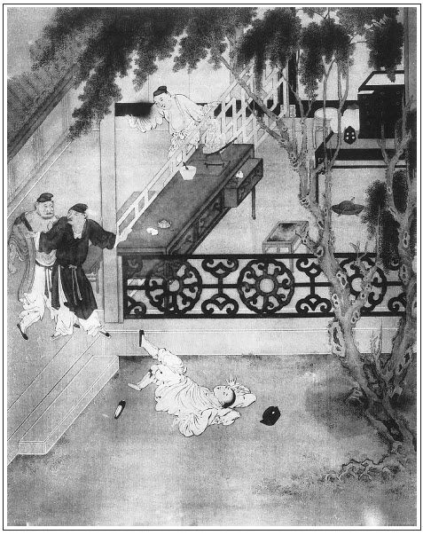

張回上文自十四回至此，總是瓶兒文字。內穿插他人，如敬濟等，皆是趁窩和泥。此回乃是正經寫瓶兒歸西門氏也。乃先於卷首將花園等項題明蓋完，此猶娶瓶兒傳內事，卻接敘金蓮、敬濟一事。妙絕。《金瓶》文字，其穿插處，篇篇如是。後生家學之，便會自做太史公也。
看他花園內又寫月娘教敬濟來，其罪月娘可知。
草裡蛇，乃是作者既欲以竹山為我妙文作起伏頓挫之勢，不得不以草裡蛇作收拾竹山之筆。看者不知，乃為竹山叫屈，且為竹山責備，可笑。
張勝者，結果敬濟之人也，乃敬濟才見金蓮，兩心私許時，已於游花園之一日，作者即出一張勝，且雲守備府作長隨，是一念起而持刀者已至矣。可畏，可畏。
張勝結果陳敬濟者，而出身卻是為瓶兒來。文字七穿八達之妙，有如此。
寫瓶兒進門，西門、月娘情景，卻用玉樓口中描出。而西門打瓶兒處，真是如老鴇打娼妓者然。隨打且隨好，寫西門廉恥房心俱無，而瓶兒亦良心廉恥俱無。
皆彘不若之人也。
詩曰：
人靡不有初，想君能終之。
別來歷年歲，舊恩何可期。
重新而忘故，君子所猶譏。
寄身雖在遠，豈忘君須臾。
既厚不為薄，想君時見思。

話說西門慶起蓋花園卷棚，約有半年光陰，裝修油漆完備，前後煥然一新。慶房的整吃了數日酒，俱不在話下。張夾必先敘出，庶瓶兒來，不費筆墨。
一日，八月初旬，與夏提刑做生日，在新買莊上擺酒。叫了四個唱的、一起樂工、雜耍步戲。西門慶從巳牌時分，就騎馬去了。吳月娘在家，整置了酒餚細果，約同李嬌兒、孟玉樓、孫雪娥、大姐、潘金蓮眾人，開了新花園門游賞。張旁又大書月娘之罪。文旁然則自家婦女不可游自家花園矣。何罪月娘之深也。作者未必有此心，批者不知從何處看出，或者先生令正終日坐在床上不出房門也。裡面花木庭台，一望無際，端的好座花園。但見：
正面丈五高，周圍二十板。當先一座門樓，四下幾間台榭。假山真水，翠竹蒼松。高而不尖謂之台，巍而不峻謂之榭。張夾寫西門市井入骨。
四時賞玩，各有風光：春賞燕遊堂，桃李爭妍；夏賞臨溪館，荷蓮斗彩；秋賞疊翠樓，黃菊舒金；冬賞藏春閣，白梅橫玉。更有那嬌花籠淺徑，芳樹壓雕欄，弄風楊柳縱蛾眉，帶雨海棠陪嫩臉。燕遊堂前，燈光花似開不開；藏春閣後，白銀杏半放不放。湖山側才綻金錢，寶檻邊初生石筍。翩翩紫燕穿簾幙，嚦嚦黃鶯度翠陰。也有那月窗雪洞，也有那水閣風亭。木香棚與荼䕷架相連，千葉桃與三春柳作對。松牆竹徑，曲水方池，映階蕉棕，向日葵榴。游漁藻內驚人，粉蝶花間對舞。
正是：
芍葯展開菩薩面，荔枝擎出鬼王頭。
當下吳月娘領著眾婦人，或攜手游芳徑之中，或斗草坐香茵之上。一個臨軒對景，戲將紅豆擲金鱗；一個伏檻觀花，笑把羅紈驚粉蝶。繡眉不減西園雅集。月娘於是走在一個最高亭子上，名喚臥雲亭，和孟玉樓、李嬌兒下棋。潘金蓮和西門大姐、孫雪娥都在玩花樓望下觀看。見樓前牡丹花畔，芍葯圃、海棠軒、薔薇架、木香棚，又有耐寒君子竹、欺雪大夫松。端的四時有不謝之花，八節有長春之景。觀之不足，看之有餘。不一時擺上酒來，吳月娘居上，李嬌兒對席，兩邊孟玉樓、孫雪娥、潘金蓮、西門大姐，各依序而坐。月娘道：「我忘了請姐夫來坐坐。」繡眉處處是月娘作俑。張夾又書月娘。一面使小玉：「前邊快請姑夫來。」不一時，敬濟來到，頭上天青羅帽，身穿紫綾深衣，腳下粉頭皂靴，向前作揖，就在大姐跟前坐下。傳杯換盞，吃了一回酒，吳月娘還與李嬌兒、西門大姐下棋。孫雪娥與孟玉樓卻上樓觀看。惟有金蓮，且在山子前花池邊，用白紗團扇撲蝴蝶為戲。不妨敬濟悄悄在他背後戲說道：「五娘，你不會撲蝴蝶兒，等我替你撲。這蝴蝶兒忽上忽下心不定，有些走滾。」繡旁挑逗亦妙。那金蓮扭回粉頸，斜瞅了他一眼，罵道：「賊短命，人聽著，你待死也！我曉得你也不要命了。」繡眉罵得狠甚，卻又情甚，真千金不能移易一字。那敬濟笑嘻嘻撲近他身來，摟他親嘴。被婦人順手只一推，把小伙兒推了一交。卻不想玉樓在玩花樓遠遠瞧見，叫道：「五姐，你走這裡來，我和你說話。」張旁寫玉樓冷眼如畫，不關心亦如畫。金蓮方才撇了敬濟，上樓去了。原來兩個蝴蝶到沒曾捉得住，到訂了燕約鶯期，則做了蜂須花嘴。張夾此處為二人一現因。正是：
狂蜂浪蝶有時見，飛入梨花沒尋處。
敬濟見婦人去了，默默歸房，心中怏怏不樂。口占《折桂令》一詞，以遣其悶：
我見他斜戴花枝，朱唇上不抹胭脂，似抹胭脂。前日相逢，似有私情，未見私情。欲見許，何曾見許！似推辭，本是不推辭。約在何時？會在何時？不相逢，他又相思張夾何以知之？；既相逢，我又相思。
且不說吳月娘等在花園中飲酒。單表西門慶從門外夏提刑莊子上吃了酒回家，打南瓦子巷裡頭過。平昔在三街兩巷行走，搗子們都認的──宋時謂之搗子，今時俗呼為光棍。內中有兩個，一名草裡蛇魯華，一名過街鼠張勝，常受西門慶資助，乃雞竊狗盜之徒。西門慶見他兩個在那裡耍錢，就勒住馬，上前說話。二人連忙走到跟前，打個半跪道：「大官人，這咱晚往那裡去來？」西門慶道：「今日是提刑所夏老爹生日，門外莊上請我們吃了酒來。我有一樁事央煩你們，依我不依？」二人道：「大官人沒的說，小人平昔受恩甚多，如有使令，雖赴湯蹈火，萬死何辭！」西門慶道：「既是恁說，明日來我家，我有話吩咐你。」二人道：「那裡等的到明日！你老人家說與小人罷，端的有甚麼事？」西門慶附耳低言，便把蔣竹山要了李瓶兒之事說了一遍：「只要你弟兄二人替我出這口氣兒便了！」因在馬上摟起衣底順袋中，還有四五兩碎銀子，都倒與二人。便道：「你兩個拿去打酒吃。只要替我幹得停當，還謝你二人。」魯華那裡肯接，說道：「小人受你老人家恩還少哩！我只道教俺兩個往東洋大海裡拔蒼龍頭上角，西華岳山中取猛虎口中牙，便去不的，這些小之事，有何難哉！這個銀兩，小人斷不敢領。」西門慶道：「你不收，我也不央及你了。」教玳安接了銀子，打馬就走。又被張勝攔住說：「魯華，你不知他老人家性兒？你不收，恰似咱每推脫的一般。」一面接了銀子，扒到地下磕了頭，說道：「你老人家只顧家裡坐著，不消兩日，管情穩抇抇教你笑一聲。」繡眉彼此俱不說破如何出氣，最有養蓄。張勝道：「只望大官人到明日，把小人送與提刑夏老爹那裡答應，就夠了小人了。」西門慶道：「這個不打緊。」後來西門慶果然把張勝送在守備府做了個親隨。繡旁伏。此系後事，表過不題。張夾敬濟才動念，張勝之名早出。淫近殺，可畏哉！那兩個搗子，得了銀子，依舊耍錢去了。
西門慶騎馬來家，已是日西時分。月娘等眾人，聽見他進門，都往後邊去了，只有金蓮在卷棚內看收家活。西門慶不往後邊去，逕到花園裡來，見婦人在亭子上收傢伙，便問：「我不在，你在這裡做甚麼來？」金蓮笑道：「俺們今日和大姐姐開門看了看，誰知你來的恁早。」西門慶道：「今日夏大人費心，莊子上叫了四個唱的，只請了五位客到。我恐怕路遠，來的早。」婦人與他脫了衣裳，因說道：「你沒酒，教丫頭看酒來你吃。」西門慶吩咐春梅：「把別的菜蔬都收下去，只留下幾碟細果子兒，篩一壺葡萄酒來我吃。」坐在上面椅子上，因看見婦人上穿沉香色水緯羅對襟衫兒，五色縐紗眉子，下著白碾光絹挑線裙兒，裙邊大紅段子白綾高低鞋兒。頭上銀絲䯼髻，金鑲分心翠梅鈿兒，雲鬢簪著許多花翠。越顯得紅馥馥朱唇、白膩膩粉臉，繡旁金蓮往往以媚勝。不覺淫心輒起，攙著他兩隻手兒，摟抱在一處親嘴。不一時，春梅篩上酒來，兩個一遞一口兒飲酒咂舌。婦人一面摳起裙子，坐在身上，噙酒哺在他口裡，然後纖手拈了一個鮮蓮蓬子繡旁有致。與他吃。西門慶道：「澀剌剌的，繡旁俗甚吃他做甚麼？」婦人道：「我的兒，你就吊了造化了，娘手裡拿的東西兒你不吃！」又口中噙了一粒鮮核桃仁兒，繡旁嬌態可人。送與他才罷了。張夾蓮子、胡桃仁、要看者記是八月初旬，為分明官哥為誰子故也。西門慶又要玩弄婦人的胸乳。婦人一面攤開羅衫，露出美玉無瑕、香馥馥的酥胸，緊就就的香乳。揣摸良久，用口舐之，彼此調笑，曲盡「于飛」。
西門慶乘著歡喜，向婦人道：「我有一件事告訴你，到明日，教你笑一聲。你道蔣太醫開了生藥鋪，到明日管情教他臉上開果子鋪來。」婦人便問怎麼緣故。西門慶悉把今日門外撞遇魯、張二人之事，告訴了一遍。婦人笑道：「你這個眾生，到明日不知作多少罪業。」又問：「這蔣太醫，不是常來咱家看病的麼？我見他且是謙恭，見了人把頭只低著，可憐見兒的，你這等做作他！」西門慶道：「你看不出他。你說他低著頭兒，他專一看你的腳哩。」婦人道：「汗邪的油嘴！他可可看人家老婆的腳？我不信，他一個文墨人兒，繡眉鍾情文墨人為甚，惜金蓮未遇耳。也幹這個營生？」繡旁又映出西門慶面目。西門慶道：「你看他迎面兒，就誤了勾當，單愛外裝老成內藏奸詐。」張夾卻不知家中現有敬濟。處世之難如此。兩個說笑了一回，不吃酒了，收拾了家活，歸房宿歇，不在話下。
卻說李瓶兒招贅了蔣竹山，約兩月光景。張夾記清。不可胡亂看過。初時蔣竹山圖婦人喜歡，修合了些戲藥，買了些景東人事、美女想思套之類，實指望打動婦人。不想婦人在西門慶手裡狂風驟雨經過的，往往幹事不稱其意，漸生憎惡，反被婦人把淫器之物，都用石砸的稀碎，丟掉了。繡眉無真本事人，往往討此沒趣。又說：「你本蝦鱔，腰裡無力，繡眉語語淫甚，罵竹山，適所以自罵，妙甚。平白買將這行貨子來戲弄老娘！把你當塊肉兒，原來是個中看不中吃臘槍頭，死王八！」常被婦人半夜三更趕到前邊鋪子裡睡。於是一心只想西門慶，不許他進房。每日聐聒著算帳，查算本錢。
這竹山正受了一肚氣，張夾妙為復嫁根由。走在鋪子小櫃裡坐的，只見兩個人進來，吃的浪浪蹌蹌，楞楞睜睜，走在凳子上坐下。繡眉羅致情景宛然。張夾如畫。先是一個問道：「你這鋪中有狗黃沒有？」張夾第一句如此寫。竹山笑道：「休要作戲。只有牛黃，那有狗黃？」又問：「沒有狗黃，你有冰灰也罷，張夾第二句如此寫。拿來我瞧，我要買你幾兩。」竹山道：「生藥行只有冰片，是南海波斯國地道出的，那討冰灰來？」那一個說道：「你休問他，量他才開了幾日鋪子，那裡有這兩樁藥材？只與他說正經話罷。張夾第三句如此。蔣二哥，你休推睡裡夢裡。你三年前死了娘子兒，問這位魯大哥借的那三十兩銀子，本利也該許多，張夾第四句如此。今日問你要來了。俺們才進門就先問你要，你在人家招贅了，初開了這個鋪子，恐怕喪了你行止，顯的俺們沒陰騭了。故此先把幾句風話來教你認范。你不認范，他這銀子你少不得還他。」竹山聽了，嚇了個立睜，說道：「我並沒有借他甚麼銀子。」那人道：「你沒借銀，卻問你討？自古蒼蠅不鑽那沒縫的蛋，快休說此話！」竹山道：「我不知閣下姓甚名誰，素不相識，如何來問我要銀子？」那人道：「蔣二哥，你就差了！自古於官不貧，賴債不富。想著你當初不得地時，串鈴兒賣膏藥，繡旁入情。也虧了這位魯大哥扶持，你今日就到這田地來。」這個人道：「我便姓魯，叫做魯華，繡旁自叫破姓名，妙。張夾妙。你某年借了我三十兩銀子，發送妻小，本利該我四十八兩，少不的還我。」竹山慌道：「我那裡借你銀子來？就借你銀子，也有文書保人。」張勝道：「我張勝就是保人。」張夾妙。因向袖中取出文書，與他照了照。把竹山氣的臉臘查也似黃了，罵道：「好殺才狗男女！你是那裡搗子，走來嚇詐我！」魯華聽了，心中大怒，隔著小櫃，颼的一拳去，張夾一拳。早飛到竹山面門上，就把鼻子打歪在半邊，一面把架上藥材撒了一街。張夾又寫藥。竹山大罵：「好賊搗子！你如何來搶奪我貨物？」因叫天福兒來幫助，被魯華一腳踢過一邊，張夾一腳。那裡再敢上前。張勝把竹山拖出小櫃來，攔住魯華手，勸道：張夾拖出來，卻勸。妙絕。「魯大哥，你多日子也耽待了，再寬他兩日兒，教他湊過與你便了。蔣二哥，你怎麼說？」竹山道：「我幾時借他銀子來？就是問你借的，也等慢慢好講，如何這等撒野？」張勝道：「蔣二哥，你這回『吃了橄欖灰兒──回過味來了』。張夾便趁來。你若好好早這般，我教魯大哥饒讓你些利錢兒，你便兩三限湊了還他，才是話。你如何把硬話兒不認，莫不人家就不問你要罷？」那竹山聽了道：「氣殺我，我和他見官去！誰借他甚麼錢來！」張勝道：「你又吃了早酒了！」不提防魯華又是一拳，張夾一拳。仰八叉跌了一交，險不倒栽入洋溝裡，將發散開，巾幘都污濁了。竹山大叫「青天白日」起來，被保甲上來，都一條繩子拴了。李瓶兒在房中聽見外邊人嚷，走來簾下聽覷，見地方拴的竹山去了，氣的個立睜。使出馮媽媽來，把牌面幌子都收了。街上藥材，被人搶了許多。一面關閉了門戶，家中坐的。
早有人把這件事報與西門慶知道，即差人吩咐地方，明日早解提刑院。這裡又拿帖子，對夏大人說了。次日早，帶上人來，夏提刑升廳，看了地方呈狀，叫上竹山去，問道：「你是蔣文蕙？張夾名字至此出。如何借了魯華銀子不還，反行毀打他？甚情可惡！」
竹山道：「小人通不認的此人，並沒借他銀子。小人以理分說，他反不容，亂行踢打，把小人貨物都搶了。」夏提刑便叫魯華：「你怎麼說？」魯華道：「他原借小的銀兩，發送喪妻，至今三年，延挨不還。小的今日打聽他在人家招贅，做了大買賣，問他理討，他倒百般辱罵小的，說小的搶奪他的貨物。見有他借銀子的文書在此，這張勝就是保人，望爺察情。」一面懷中取出文契，遞上去。夏提刑展開觀看，寫道：
立借票人蔣文蕙，系本縣醫生，為因妻喪，無錢發送，憑保人張勝，借到魯華名下白銀三十兩，月利三分，入手用度。約至次年，本利交還，不致少欠。恐後無憑，立此借票存照。
夏提刑看了，拍案大怒道：「可又來，見有保人、借票，還這等抵賴。看這廝咬文嚼字模樣，就像個賴債的。」繡眉咬文嚼字人會賴債，毒語罵盡天下。張夾秀才聽著。喝令左右：「選大板，拿下去著實打。」當下三、四個人，不由分說，拖翻竹山在地，痛責三十大板，打的皮開肉綻，鮮血淋漓。一面差兩個公人，拿著白牌，押蔣竹山到家，處三十兩銀子交還魯華。不然，帶回衙門收監。
那蔣竹山打的兩腿剌八著，張夾如畫。走到家哭哭啼啼哀告李瓶兒，問他要銀子，還與魯華。又被婦人噦在臉上，罵道：「沒羞的忘八，你遞甚麼銀子在我手裡，問我要銀子？我早知你這忘八砍了頭是個債樁，就瞎了眼也不嫁你這中看不中吃的忘八！」
那四個人聽見屋裡嚷罵，不住催逼叫道：「蔣文蕙既沒銀子，不消只管挨遲了，趁早到衙門回話去罷。」竹山一面出來安撫了公人，又去裡邊哀告婦人。直蹶兒跪在地上，繡旁此是竹山長技。哭哭啼啼說道：「你只當積陰騭，四山五捨齋佛佈施這三十兩銀子罷！不與這一回去，我這爛屁股上怎禁的拷打？就是死罷了。」婦人不得已拿出三十兩雪花銀子與他，繡旁還是好人。當官交與魯華，扯碎了文書，方才完事。
這魯華、張勝得了三十兩銀子，逕到西門慶家回話。西門慶留在卷棚下，管待二人酒飯。把前事告訴了一遍。西門慶滿心大喜說：「二位出了我這口氣，足夠了。」魯華把三十兩銀子交與西門慶，西門慶那裡肯收：「你二人收去，買壺酒吃，就是我酬謝你了。後頭還有事相煩。」二人臨起身謝了又謝，拿著銀子，自行耍錢去了。正是：
常將壓善欺良意，權作尤雲殢雨心。
卻說蔣竹山提刑院交了銀子，歸到家中。婦人那裡容他住，說道：「只當奴害了汗病，把這三十兩銀子問你討了藥吃了。張夾惟竹山用此語，恰當。你趁早與我搬出去罷！再遲些時，連我這兩間房子，尚且不夠你還人！」這蔣竹山只知存身不住，繡旁晚矣。哭哭啼啼，忍著兩腿疼，自去另尋房兒。但是婦人本錢置的貨物都留下，繡旁也是好人。把他原舊的藥材、藥碾、藥篩、藥箱之物，即時催他搬去，兩個就開交了。臨出門，婦人還使馮媽媽舀了一盆水，趕著潑去，說道：「喜得冤家離眼睛！」當日打發了竹山出門。這婦人一心只想著西門慶，又打聽得他家中沒事，心中甚是懊悔。繡旁勢利語，可笑。每日茶飯慵餐，娥眉懶畫，把門兒倚遍，眼兒望穿，白盼不見一個人兒來。正是：
枕上言猶在，於今恩愛淪。
房中人不見，無語自消魂。
不說婦人思想西門慶，單表一日玳安騎馬打門首經過，看見婦人大門關著，藥鋪不開，靜落落的，歸來告訴與西門慶。西門慶道：「想必那矮忘八打重了，在屋裡睡哩，會勝也得半個月出不來做買賣。」遂把這事情丟下了。張夾又一賴。
一日，八月十五日，吳月娘生日，張眉可知赴會日瓶兒雲月娘「生日必來」之妙。家中有許多堂客來，在大廳上坐。西門慶因與月娘不說話，一逕來院中李桂姐家坐的，吩咐玳安：「早回馬去罷，晚上來接我。」旋邀了應伯爵、謝希大來打雙陸。那日桂卿也在家，姐妹兩個陪侍勸酒。良久，都出來院子內投壺耍子。玳安約至日西時分，勒馬來接。西門慶正在後邊出恭，見了玳安問：「家中無事？」玳安道：「家中沒事。大廳上堂客都散了，止有大妗子與姑奶奶眾人，大娘邀的後邊去了。今日獅子街花二娘那裡，使了老馮與大娘送生日禮來：繡旁瓶兒面皮老甚。四盤羹果、兩盤壽桃面、一疋尺頭，又與大娘做了一雙鞋。大娘與了老馮一錢銀子，說爹不在家了。也沒曾請去。」繡旁月娘有主意。張夾寄物何日還哉？月娘可恨。文旁專以寄物為月娘罪案，不知恨其未阻歟？恨其代收歟？婦人見錢見利不知有義，當不止月娘一人，而況圖財害命，賴財絕交，騙財私逃，匿財發誓，滔滔皆是也，何獨罪一婦人如此之甚也。即使定罪，亦當有首從之分，豈首先之人當從末減歟？抑在輕罪不議外歟？誤收之於前，此刻應作何發付？或退還之歟？抑迎娶其人歟？先生必有以處。此若謂勸西門慶不可娶其人，為圖財、賴財，騙財、匿財張本，要知西門慶之娶與不娶，亦非月娘所能作主。勸者自勸，娶者自娶，期已定矣，事已成矣。乃意外之風波，無端之離散，又非月娘之詭計以阻其娶，又非月娘之奇謀以逼其嫁。事之遲誤，娶者嫁者，各居其半，而在旁之一言，竟至不與交談。已娶過門矣，仍付之不理，而與諸妾說話。此等兇惡丈夫，尚敢與之爭財而據為己有乎？觀西門慶之言曰：「你要告我收你許多東西。」可見寄物尚在西門手內，非月娘之所能專也，然則何以如此深罪婦人也。批者未免心偏，故我不自覺其言之長也。豈有私心乎？亦不平之鳴耳。西門慶因見玳安臉紅紅的，便問：「你那裡吃酒來？」玳安道：「剛才二娘使馮媽媽叫了小的去，與小的酒吃。我說不吃酒，強說著叫小的吃了兩鐘，就臉紅起來。繡眉亦善辭。如今二娘到悔過來，對著小的好不哭哩。前日我告爹說，爹還不信。從那日提刑所出來，就把蔣太醫打發去了。二娘甚是懊悔，一心還要嫁爹，比舊瘦了好些兒，央及小的好歹請爹過去，討爹示下。爹若吐了口兒，還教小的回他一聲。」西門慶道：「賊賤淫婦，既嫁漢子去罷了，又來纏我怎的？既是如此，我也不得閒去。你對他說，甚麼下茶下禮，揀個好日子，抬了那淫婦來罷。」繡眉數語又氣又喜，卻又不敢再緩，妙於立言。張夾急收轉，如畫。玳安道：「小的知道了。他那裡還等著小的去回他話哩，教平安、畫童兒這裡伺候爹就是了。」西門慶道：「你去，我知道了。」這玳安出了院門，一直走到李瓶兒那裡，回了婦人話。婦人滿心歡喜，說道：「好哥哥，今日多累你對爹說，成就了此事。」於是親自下廚整理蔬菜，管待玳安，說道：「你二娘這裡沒人，明日好歹你來幫扶天福兒，著人搬傢伙過去。」次日雇了五六副扛，整抬運四五日。西門慶也不對吳月娘說，都堆在新蓋的玩花樓上。張旁遙映與月娘商議。擇了八月二十日，一頂大轎，一疋段子紅，四對燈籠，派定玳安、平安、畫童、來興四個跟轎，約後晌時分，方娶婦人過門。婦人打發兩個丫鬟，教馮媽媽領著先來了，等的回去，方才上轎。把房子交與馮媽媽、天福兒看守。
西門慶那日不往那裡去，在家新卷棚內，深衣幅巾坐的，單等婦人進門。婦人轎子落在大門首，半日沒個人出去迎接。繡旁太沒趣。張夾寫月娘。孟玉樓走來上房，張夾玉樓與金、瓶、梅三人實終始之。對月娘說：「姐姐，你是家主，如今他已是在門首，你不去迎接迎接兒，惹的他爹不怪？他爹在卷棚內坐著，轎子在門首這一日了，沒個人出去，怎麼好進來的？」這吳月娘欲待出去接他，心中惱，又不下氣；欲待不出去，又怕西門慶性子不是好的。沉吟了半晌，於是輕移蓮步，款蹙湘裙，出來迎接。婦人抱著寶瓶，逕往他那邊新房去了。迎春、繡春兩個丫鬟，又早在房中鋪陳停當，單等西門慶晚夕進房。不想西門慶正因舊惱在心，不進他房去。到次日，叫他出來後邊月娘房裡見面，分其大小，排行他是六娘。一般三日擺大酒席，請堂客會親吃酒，只是不往他房裡去。頭一日晚夕，先在潘金蓮房中。金蓮道：「他是個新人兒，繡旁未必新。才來頭一日，你就空了他房？」西門慶道：「你不知淫婦有些眼裡火，等我奈何他兩日，慢慢的進去。」到了三日，打發堂客散了，西門慶又不進他房中，往後邊孟玉樓房裡歇去了。這婦人見漢子一連三夜不進他房來，到半夜打發兩個丫鬟睡了，飽哭了一場，可憐走到床上，用腳帶吊頸懸樑自縊。繡眉熱人一處冷局，便亂矣。張夾悔恨在寄物一著。正是：
連理未諧鴛帳底，冤魂先到九重泉。
兩個丫鬟睡了一覺醒來，見燈光昏暗，起來剔燈，猛見床上婦人吊著，嚇慌了手腳。忙走出隔壁叫春梅說：「俺娘上吊哩！」慌的金蓮起來這邊看視，見婦人穿一身大紅衣裳，直掇掇吊在床上。連忙和春梅把腳帶割斷，解救下來。過了半日，吐了一口清涎，方才甦醒。即叫春梅：「後邊快請你爹來。」西門慶正在玉樓房中吃酒，還未睡哩。先是玉樓勸西門慶說道：「你娶將他來，一連三日不往他房裡去，惹他心中不惱麼？恰似俺們把這樁事放在頭裡一般，頭上末下，就讓不得這一夜兒。」西門慶道：「待過三日兒我去。你不知道，淫婦有些吃著碗裡，看著鍋裡。想起來你惱不過我。未曾你漢子死了，相交到如今，甚麼話兒沒告訴我？張夾然而子虛何如惱也？臨了，招進蔣太醫去！我不如那廝？今日卻怎的又尋將我來？」玉樓道：「你惱的是。他也吃人騙了。」正說話間，忽一片聲打儀門。玉樓使蘭香問，說是春梅來請爹：「六娘在房裡上吊哩！」慌的玉樓攛掇西門慶不迭，便道：「我說教你進他房中走走，你不依，只當弄出事來。」於是打著燈籠，走來前邊看視。落後吳月娘、李嬌兒聽見，都起來，到他房中。見金蓮摟著他坐的，說道：「五姐，你灌了他些薑湯兒沒有？」金蓮道：「我救下來時，就灌了些了。」那婦人只顧喉中哽咽了一回，方哭出聲。月娘眾人一塊石頭才落地，好好安撫他睡下，各歸房歇息。
次日，晌午前後，李瓶兒才吃些粥湯兒。西門慶向李嬌兒眾人說道：張夾不對月娘說。「你們休信那淫婦裝死嚇人。我手裡放不過他。到晚夕等我到房裡去，親看著他上個吊兒我瞧，不然吃我一頓好馬鞭子。賊淫婦！不知把我當誰哩！」張夾真情之甚。然而瓶兒寄物之失，西門拔梯之惡，皆見矣。眾人見他這般說，都替李瓶兒捏著把汗。到晚夕，見西門慶袖著馬鞭子，進他房去了。玉樓、金蓮吩咐春梅把門關了，不許一個人來，都立在角門首兒外悄悄聽著。
且說西門慶見他睡在床上，倒著身子哭泣，繡旁不見景。見他進去不起身，心中就有幾分不悅。先把兩個丫頭都趕去空房裡住了。西門慶走來椅子上坐下，指著婦人罵道：「淫婦！你既然虧心，何消來我家上吊？你跟著那矮忘八過去便了，誰請你來！我又不曾把人坑了，你甚麼緣故，流那𣭈尿怎的？我自來不曾見人上吊，我今日看著你上個吊兒我瞧！」於是拿一條繩子丟在他面前，叫婦人上吊。那婦人想起蔣竹山說西門慶是打老婆的班頭，降婦女的領袖，思量我那世裡晦氣，今日大睜眼又撞入火坑裡來了，越發煩惱痛哭起來。繡眉時時轉念，寫出瓶兒之淺。這西門慶心中大怒，教他下床來脫了衣裳跪著。婦人只顧延挨不脫，被西門慶拖翻在床地平上，張夾直是行院行徑，豈復人類！袖中取出鞭子來抽了幾鞭子，繡眉雖瓶兒自取，然亦非情人舉止。婦人方才脫去上下衣裳，戰兢兢跪在地平上。西門慶坐著，從頭至尾問婦人：「我那等對你說，教你略等等兒，我家中有些事兒，如何不依我，慌忙就嫁了蔣太醫那廝？你嫁了別人，我倒也不惱！那矮忘八有甚麼起解？你把他倒踏進門去，拿本錢與他開舖子，在我眼皮子跟前，要撐我的買賣！」張夾市井可笑。婦人道：「奴不說的悔也是遲了。只因你一去了不見來，朝思暮想，奴想的心斜了。後邊喬皇親花園裡常有狐狸，要便半夜三更假名托姓變做你，來攝我精髓，張夾今日仍變來攝他的。到天明雞叫就去了。你不信只要問老馮、兩個丫頭便知。後來看看把奴攝得至死，才請這蔣太醫來看。奴就像吊在麴糊盆內一般，吃那廝局騙了。張夾回護得妙甚。說你家中有事，上東京去了，奴不得已才幹下這條路。誰知這廝斫了頭是個債樁，被人打上門來，經動官府。奴忍氣吞聲，丟了幾兩銀子，吃奴即時攆出去了。」繡眉始終無一巧言，瓶兒畢竟老實。使金蓮當此，定另有一番妙舌矣西門慶道：「說你叫他寫狀子，告我收著你許多東西。繡旁虛心語。你如何今日也到我家來了！」張夾負心至此，卻是虛心。婦人道：「你可是沒的說。奴那裡有這話，就把奴身子爛化了。」張夾如吮出。西門慶道：「就算有，我也不怕。你說你有錢，快轉換漢子，我手裡容你不得！張夾如吮出。我實對你說罷，前者打太醫那兩個人，是如此這般使的手段。只略施小計，教那廝疾走無門，若稍用機關，也要連你掛了到官，弄倒一個田地。」張夾可殺。婦人道：「奴知道是你使的術兒。還是可憐見奴，若弄到那無人煙之處，就是死罷了。」張夾三語直刺負心者之骨，瓶兒亦利口。看看說的西門慶怒氣消下些來了。又問道：「淫婦你過來，我問你，我比蔣太醫那廝誰強？」繡旁又自己出路。婦人道：「他拿甚麼來比你！你是個天，他是塊磚；你在三十三天之上，他在九十九地之下。休說你這等為人上之人，只你每日吃用稀奇之物，他在世幾百年還沒曾看見哩！他拿甚麼來比你！莫要說他，就是花子虛在日，若是比得上你時，奴也不恁般貪你了。繡旁此一轉，妙。你就是醫奴的藥一般，一經你手，教奴沒日沒夜只是想你。」張夾一字不差，與上文遙對。自這一句話，把西門慶舊情兜起，歡喜無盡，即丟了鞭子，用手把婦人拉將起來，穿上衣裳，摟在懷裡，說道：「我的兒，你說的是。果然這廝他見甚麼碟兒天來大！」即叫春梅：「快放桌兒，後邊取酒菜兒來！」
正是：
東邊日出西邊雨，道是無情卻有情。
有詩為證：
碧玉破瓜時，郎為情顛倒。
感君不羞赧，回身就郎抱。
文回文禹門曰：瓶兒必定要嫁西門慶，因情乎？圖淫乎？抑為寄物乎？必有能辯之者。設使蔣竹山而為偉男子也，西門慶得而毆辱之，不得而拆散之也。且西門本意，亦不過出氣，尚未曾計及拆散也。其拆者瓶兒自拆，而散者竹山自散也。蔣竹山被打，為西門慶之所使，張、魯二人知之。竹山或未必知，夏提刑亦是告知，李瓶兒固早已逆知，並計及將來，必致竹山於死，為武大、花二之續，而我亦不知死所。
此時此刻，當悔寄物之冒失，托身之荒唐，念子虛之含冤，恨西門之誤事，顧何以心心唸唸，尚欲嫁之也？謂西門之情，有以感之乎？西門之情，果安在乎？謂寄存之物，可以歸己乎？觀西門之毒，果肯見還乎？前後尋思，可知李氏之必欲西門者，非因西門之情，實圖西門之物也。不在所寄之諸物，實在所愛之一物也。觀其詈竹山曰：「中看不中吃的忘八」，對西門曰：「你就是醫奴的藥一般」，心事合盤托出。昔人云：一世修貌，二世修陰。潘、驢、鄧、小、閒，當以驢字為第一。戰敗娘子軍，攻破婦人城，竟非此不可也。世有想取瓶兒者否？當先自認為西門慶，勿使人呼蔣竹山也。
乃猶有以為不然，謂瓶兒實以情感西門慶者。觀其過門三日，所思之物不可得，悔恨交加，死而已矣。天果令其竟死，子虛之氣，可以少平，西門之惡，可以少斂，瓶兒之罪，可以少減。作者竟不令其死，瓶兒之願遂償，瓶兒之丑，乃愈不可掩矣。不必待群婢之相嘲，諸人之請見，其忸怩之態，有難以形容者。即此裸跪床前，哀鳴鞭下，苟非心神俱惑，廉恥盡忘，早已玉碎燈前，花殘階下。目為淫婦，詎苛辭乎？其以西門慶為藥，果何物乎？亦不過海狗腎，陽起石、淫羊藿、肉蓯蓉而已爾，吁！